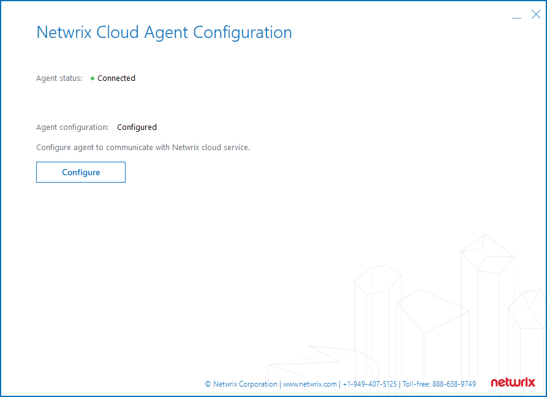
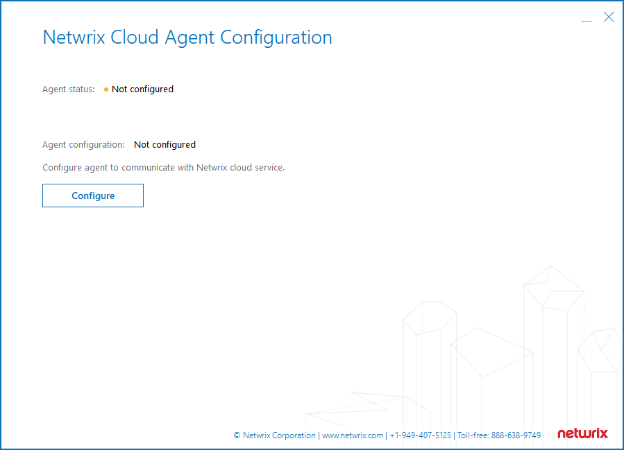
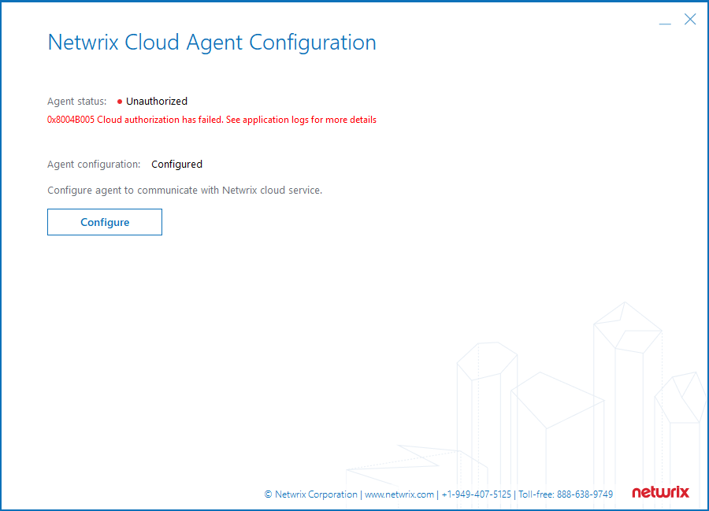

NOTE: Return to the main workflow page via this link: 1Secure Troubleshooting Workflow.
Proceed to the next section via this link: 1Secure − Analyze ManagedObjects Node.
Overview
This article covers the AgentCore node legend in the 1Secure
Configuration.xml file. This article also includes an example of the
AgentCore node. Refer to the following
Configuration.xml location:
C:\ProgramData\Netwrix Cloud Agent\AgentCore\ConfigServer1. AgentCore legend
The AgentCore\MainSettings node should contain the following subnodes:
-
ApiEndPoint. A URL. The value is used to interact with the Cloud. -
ClientSecret. A unique key. The value is used for authorization in the Cloud. -
ProviderReference. A unique identifier of the agent. -
TenancyReference. A unique identifier of the organization where the agent is deployed.
The AgentCore\Certificates node should contain the following subnodes:
-
DER. A public key of the agent. The key is used by the Cloud to encrypt credentials for this particular agent. -
RSA. A private key of the agent. The key is used by the agent to decrypt credentials received from the Cloud. -
NeedToSend. A flag. The value confirms the public DER key was successfully sent to the Cloud.
IMPORTANT: If the
AgentCorenode misses any subnodes or values, run the Netwrix Cloud Agent Configuration tool. The tool is located inC:\Program Files\Netwrix Cloud Agent\Agent Core\CloudAgentConfigTool.exe.
The main tool screen looks as follows if there are no issues with the configuration file:
The main tool screen looks as follows if either the
MainSettingsnode is missing or the initial configuration has not been performed:The main tool screen looks as follows if there are issues in the Cloud connection:
You can find the related logs in
C:\ProgramData\Netwrix Cloud Agent\Logs\CloudAgentCoreSvc\CloudAgentCore.log.
1.1 CloudAgentCore.log usage
The CloudAgentCore.log lines may include event descriptions. See examples
below.
-
The server name or address could not be resolved. Check the internet connection in the host and DNS settings.
2023-07-05 12:03:10.9988312 | INFO | 6336 6196 | RestApiHandler.cpp:163 | Exiting: NetwrixOverlord::RestApiHandler::StopThreads [0.064 ms] 2023-07-05 12:03:43.1430323 | ERR | 6336 6196 | RestApiHandler.cpp:61 | Cloud authentication has failed. Error while sending a request. Error Code: 12007: The server name or address could not be resolved . 2023-07-05 12:03:43.1430648 | ERR | 6336 6196 | CloudAgentCoreService.cpp:129 | m_restApiClient->Authenticate() call failed. 0x8004B005 Cloud authorization has failed. See application logs for more details [0x00007FFBAB797327,0x00007FFBAB796E56]; 2023-07-05 12:03:43.1430902 | ERR | 6336 6196 | CloudAgentCoreService.cpp:137 | NetwrixOverlord::CloudAgentCoreService::Initialize failed: 0x8004B005 Cloud authorization has failed. See application logs for more details [0x00007FFBAB797327,0x00007FFBAB796E56]
-
The access is forbidden for this particular put configuration. It most likely means that the tenant is already served by some other agent. If you are certain that this is the correct agent, then re-enter the agent configuration in the Cloud Agent Configuration tool.
2023-07-05 12:14:28.8915749 | ERR | 6440 65400 | AzureExceptions.h:34 | Status code: 403, reason: "". 2023-07-05 12:14:28.8929019 | ERR | 6440 65400 | RestApiHandler.cpp:61 | Cloud authentication has failed. 2023-07-05 12:14:28.8934781 | ERR | 6440 65400 | CloudAgentCoreService.cpp:129 | m_restApiClient->Authenticate() call failed. 0x8004B005 Cloud authorization has failed. See application logs for more details [0x00007FFBAB797327,0x00007FFBAB796E56]; 2023-07-05 12:14:28.8935318 | ERR | 6440 65400 | CloudAgentCoreService.cpp:137 | NetwrixOverlord::CloudAgentCoreService::Initialize failed: 0x8004B005 Cloud authorization has failed. See application logs for more details [0x00007FFBAB797327,0x00007FFBAB796E56]
1.2 Configuration.xml example
The Configuration.xml is located in
C:\ProgramData\Netwrix Cloud Agent\AgentCore\ConfigServer. Refer to the
following code block for a structure reference:
<nr>
<n n="\AgentCore">
<n n="MainSettings">
<n n="Authentication" t="Authentication">
<a n="ApiEndPoint" v="…"/>
<a n="ClientSecret" t="12" v="HEX:…"/>
<a n="ProviderReference" v="…"/>
<a n="TenancyReference" v="…"/>
</n>
<n n="Certificates" t="Certificates">
<a n="DER" v="…"/>
<a n="NeedToSend" t="7" v="False"/>
<a n="RSA" t="12" v="HEX:…"/>
</n>
</n>
</n>
<n n="\AuditArchive">
…
</n>
<n n="\LicenseUsage">
<n n="da7c0b3d-63ad-ff26-fe75-ac0712a1835d">
<n n="1019cf83-51ba-4ca8-a869-415fbbcccc0b">
<n n="Active Directory users" t="LicenseCounter">
<a n="CounterName" t="2" v="Active Directory users"/>
<a n="ExcludeCount" t="3" v="0"/>
<a n="LicenseCount" t="12" v="HEX:… "/>
<a n="Reference" t="2" v="…"/>
</n>
</n>
</n>
</n>
<n n="\MSP">
…
</n>
<n n="\NetwrixAuditor">
<n n="CommonSettings"> …
<n n="MetaInformation"> …
<n n="ManagedObjects">
<n n="fbe25b03-18fb-4267-add2-fe3afabf7cc7" t="ManagedObject">
…
</n>
<n n="ce354ab6-6a46-41e5-b590-788e4b20a64c" t="ManagedObject">
…
</n>
</n>
</n>
<n n="\Templates">
…
</n>
</nr>